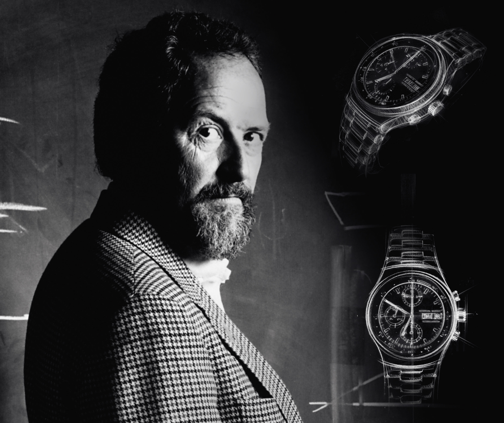
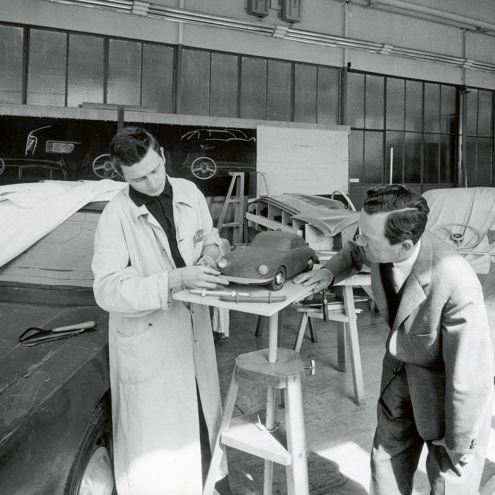
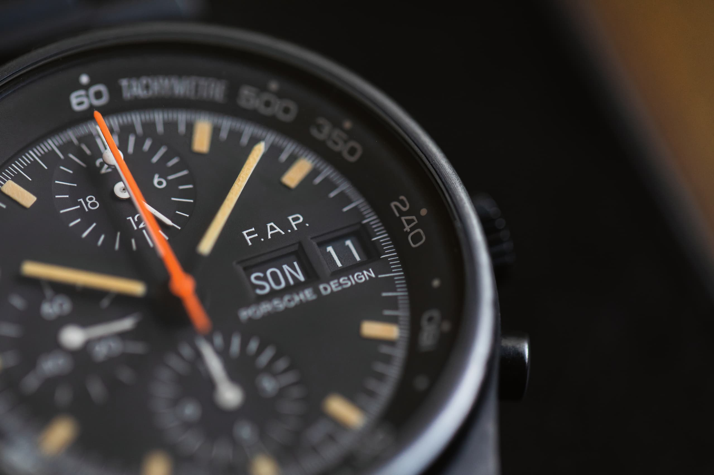
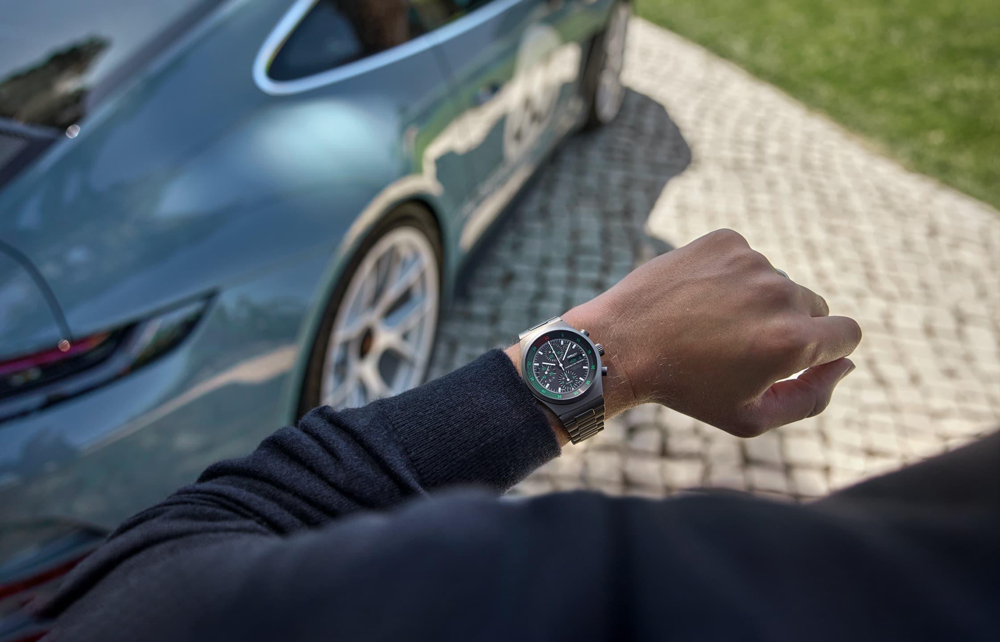
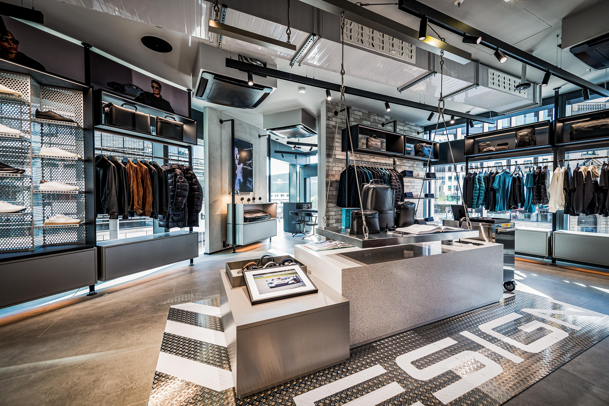

Porsche Design follows a clear design philosophy: to optimise function. Reduce the form to the essentials, without compromise. Overcome the familiar to discover a new, better solution, again and again. It is the only way to produce unique design objects that leave the predictable behind, offer maximum performance and become lifelong companions. A vision, the founder Professor Ferdinand Alexander Porsche made a reality with the creation of the legendary Porsche 911. And a maxim Porsche Design has consistently followed since 1972.

Let's take a step back in time: Ferdinand Alexander, the eldest son of Dorothea and Ferry Porsche, was born in 1935. As a child, he spent a lot of time in the design offices and development centers of his grandfather , Ferdinand Porsche. In 1958, he joined the family company in Stuttgart and honed his skills in technology, materials and minimalist design. The Porsche which he and his team developed at this time later became the icon known as the Porsche 911.



In 1972, he finally set up his own design office – today known as Studio F. A. Porsche. He received his first order from what was then Porsche AG: to design a watch as an original and high-quality gift for deserving employees and selected customers. When developing his 'founding product', he consistently and naturally followed his maxim: the honesty of design. In doing so, he set the standard that continues to determine the spirit, soul and design of Porsche Design products to this day.
The Chronograph I was the first matte Black chronograph to revolutionise the watch world and caused much controversy. But where did the idea for the innovative design of this watch, which over time would become an icon and a bestseller, come from? The unmistakable lines of the Porsche 911 continue to shape sports car design to this day. The feeling of performance, speed and elegance takes on a whole new form. Each generation of the 911 turns it into an icon. F. A. Porsche incorporated this sports car DNA directly into the Chronograph I, which he later designed, thereby translating the basic idea of the vehicle into a watch – creating the first sports car for your wrist.
The designer's stylistic idea: to model the watch on the cockpit of the sports car and to equip it with a Black Dial, high-contrast indices and a highly anti-reflective glass for optimal readability. And the Red second hand also corresponded with the rev counter and tachometer of the Porsche dashboard at that time. In doing so, he created a unique timepiece that embodies the perfect symbiosis of form and function, carries the DNA of Porsche and – then as now – exudes timeless performance.

Visit our Porsche Design Stores or one of our selected Timepieces Sepcialist
Retailers.